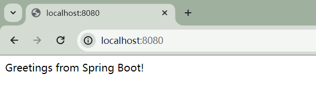

SpringBoot3-简单入门
https://spring.io/projects/spring-boot
创建
创建空项目spring-boot-3-demo
添加空模块demo-01
添加相关依赖在 pom.xml \text {pom.xml} pom.xml
1 2 3 4 5 6 7 8 9 10 11 12 <parent > <groupId > org.springframework.boot</groupId > <artifactId > spring-boot-starter-parent</artifactId > <version > 3.0.5</version > </parent > <dependencies > <dependency > <groupId > org.springframework.boot</groupId > <artifactId > spring-boot-starter-web</artifactId > </dependency > </dependencies >
新建com.bjtu.cs.MainApplication.java，添加以下代码：
1 2 3 4 5 6 7 8 9 10 11 package com.bjtu.cs;import org.springframework.boot.SpringApplication;import org.springframework.boot.autoconfigure.SpringBootApplication;@SpringBootApplication public class MainApplication { public static void main (String[] args) { SpringApplication.run(MainApplication.class, args); } }
新建controller.HelloController.java，添加以下代码：
1 2 3 4 5 6 7 8 9 10 11 12 13 14 package com.bjtu.cs.controller;import org.springframework.web.bind.annotation.GetMapping;import org.springframework.web.bind.annotation.RestController;@RestController public class HelloController { @GetMapping("/") public String index () { return "Greetings from Spring Boot!" ; } }
运行com.bjtu.cs.MainApplication.java，在浏览器中键入网址

打包部署
配置修改：application.properties
在上面的spring-boot-3-demo项目中，添加 Spring Initializr \text {Spring Initializr} Spring Initializr demo-02
添加相关依赖
新建controller.HelloController.java，添加以下代码：
1 2 3 4 5 6 7 8 9 10 11 12 13 14 package com.bjtu.cs.controller;import org.springframework.web.bind.annotation.GetMapping;import org.springframework.web.bind.annotation.RestController;@RestController public class HelloController { @GetMapping("/") public String index () { return "Greetings from Spring Boot!" ; } }
运行com.bjtu.cs.Demo02Application.java，在浏览器中键入网址
机制分析
依赖管理机制
1 2 3 4 5 6 graph TD A(spring-boot-dependencies)-.继承.->B(spring-boot-starter-parent) B-.管理.-C(Application) B-.管理.-D(Application) B-.管理.-E(Application) B-.管理.-F(...)
自动配置机制
约定大于配置：
包扫描规则
@SpringBootApplication扫描MainApplication.java所在包及其以下的子包。
修改需要自定义扫描路径：
@SpringBootApplication(scanBasePackages="XXX.YYY.ZZZ....")
@ComponentScan("XXX.YYY.ZZZ....")
配置默认规则
application.properties配置项与相关类的对象值一一绑定。
https://docs.spring.io/spring-boot/docs/current/reference/html/application-properties.html
自动加载规则
1 2 3 4 5 6 7 graph TD A(spring-boot-starter-web)-->B(spring-boot-starter)-->G(spring-boot-starter) A(spring-boot-starter-web)-->C(spring-boot-starter-json)-->G A(spring-boot-starter-web)-->D(spring-boot-starter-tomcat)-->G A(spring-boot-starter-web)-->E(spring-web)-->G A(spring-boot-starter-web)-->F(spring-webmvc)-->G G-.导入.->H(spring-boot-autoconfigure)
主程序注解
@SpringBootApplication⇒ \Rightarrow ⇒ @EnableAutoConfiguration⇒ \Rightarrow ⇒ @Import({AutoConfigurationImportSelector.class})⇒ \Rightarrow ⇒
→ \rightarrow → getAutoConfigurationEntry→ \rightarrow → getCandidateConfigurations
1 2 3 4 5 protected List<String> getCandidateConfigurations (AnnotationMetadata metadata, AnnotationAttributes attributes) { List<String> configurations = ImportCandidates.load(AutoConfiguration.class, this .getBeanClassLoader()).getCandidates(); Assert.notEmpty(configurations, "No auto configuration classes found in META-INF/spring/org.springframework.boot.autoconfigure.AutoConfiguration.imports. If you are using a custom packaging, make sure that file is correct." ); return configurations; }
关注：META-INF/spring/org.springframework.boot.autoconfigure.AutoConfiguration.imports
上述这些相关类中，每个类会含 @ConditionalOnClass({XXX.class})，用于按需导入。
在使用相关类时，包含@EnableConfigurationProperties用于读取属性文件的相关属性值。
常用注解
组件注解
1 2 3 4 @Configuration public class AppConfig { ... }
@Bean：在 Spring \text {Spring} Spring Bean \text {Bean} Bean Bean \text {Bean} Bean @Scope：用于指定 Bean \text {Bean} Bean
1 2 3 4 5 @Bean @Scope("prototype") public MyBean myBean () { return new MyBean (); }
@Controller：用于标记控制器类。
@Service：用于标记服务类。
@Repository ：用于标记数据访问层的类。
@Component：是通用的组件注解，用于标记任何 Spring Bean \text {Spring Bean} Spring Bean
@ComponentScan：用于启用组件扫描，Spring Boot \text {Spring Boot} Spring Boot @Component 注解的类并注册它们为 Bean \text {Bean} Bean
1 2 3 4 5 6 7 8 9 10 11 12 13 14 15 16 17 18 19 @Controller public class MyController { } @Service public class MyService { } @Repository public class MyRepository { } @Component public class MyComponent { }
@Import：用于导入其他配置类，将它们的 Bean \text {Bean} Bean
1 2 3 4 5 @Configuration @Import({DatabaseConfig.class, SecurityConfig.class}) public class MainConfig { }
条件注解
条件注解允许基于特定条件来决定是否应该创建或注册Bean \text {Bean} Bean Bean \text {Bean} Bean
@ConditionalOnClass：当类路径中存在指定的类时，才会创建 Bean \text {Bean} Bean
1 2 3 4 5 6 @Configuration @ConditionalOnClass(MyClass.class) public class MyConfiguration { }
@ConditionalOnMissingClass：当类路径中不存在指定的类时，才会创建 Bean \text {Bean} Bean
1 2 3 4 5 6 @Configuration @ConditionalOnMissingClass("NonExistentClass") public class MyConfiguration { }
@ConditionalOnBean：仅当容器中存在指定类型的 Bean \text {Bean} Bean Bean \text {Bean} Bean
1 2 3 4 5 @Configuration @ConditionalOnBean(MyService.class) public class MyConfiguration { }
@ConditionalOnMissingBean：仅当容器中不存在指定类型的 Bean \text {Bean} Bean Bean \text {Bean} Bean
1 2 3 4 5 @Configuration @ConditionalOnMissingBean(MyService.class) public class MyConfiguration { }
@ConditionalOnProperty：仅当指定属性存在并具有特定值时，才会创建 Bean \text {Bean} Bean
1 2 3 4 5 @Configuration @ConditionalOnProperty(name = "myapp.feature.enabled", havingValue = "true") public class MyConfiguration { }
@ConditionalOnExpression：通过 SpEL \text {SpEL} SpEL Bean \text {Bean} Bean
1 2 3 4 5 @Configuration @ConditionalOnExpression("${myapp.feature.enabled}") public class MyConfiguration { }
@ConditionalOnResource：当类路径中存在指定资源文件时，才会创建 Bean \text {Bean} Bean
1 2 3 4 5 @Configuration @ConditionalOnResource(resources = "classpath:/myresource.properties") public class MyConfiguration { }
@ConditionalOnWebApplication：仅在 Web 应用程序环境下才会创建 Bean \text {Bean} Bean
1 2 3 4 5 @Configuration @ConditionalOnWebApplication public class MyWebConfiguration { }
@ConfigurationProperties ：用于将外部配置文件中的属性值绑定到 Bean \text {Bean} Bean
1 2 3 4 5 6 7 8 @Configuration @ConfigurationProperties(prefix = "myapp") public class MyAppProperties { private String name; private int version; }
@EnableConfigurationProperties ：用于将外部配置文件中的属性值注册到 Bean \text {Bean} Bean
1 2 3 4 5 6 7 @SpringBootApplication @EnableConfigurationProperties(MyAppProperties.class) public class MyApplication { public static void main (String[] args) { SpringApplication.run(MyApplication.class, args); } }
YAML配置文件
YAML \text {YAML } YAML YAML Ain’t Markup Language \text {YAML Ain't Markup Language} YAML Ain’t Markup Language YAML \text {YAML } YAML .yml 或 .yaml 扩展名保存，以表示层次结构的数据。
注释以#符号开头，可以用来添加注释说明。
层次结构使用空格缩进表示，通常是两个空格或四个空格，用于表示嵌套关系。
键值对使用冒号:分隔
列表使用短横线-开头
布尔值可以表示为true或false
多行文本可以使用|或>符号表示
日志配置
日志配置 是指确定日志记录的目标、格式、级别和其他属性的设置。典型的配置包括：
日志级别 ：决定哪些日志消息应该被记录，通常包括调试、信息、警告、错误等级别。日志输出目标 ：确定日志消息应该被发送到哪里，如控制台、文件、数据库等。日志格式 ：指定日志消息的输出格式，包括时间戳、日志级别、消息内容等。日志滚动策略 ：定义日志文件的滚动方式，如按文件大小、日期等切割日志文件。
日志门面 是一个抽象接口或API，它提供了一种方式来记录日志消息，但不负责实际的日志记录。它允许开发人员在应用程序中编写日志记录代码，而无需关心底层的日志实现细节。
日志实现 是实际执行日志记录的组件。它根据配置将日志消息写入所选的目标，如文件、数据库、控制台等。
Spring Boot \text {Spring Boot} Spring Boot SLF4J \text {SLF4J} SLF4J Simple Logging Facade for Java \text {Simple Logging Facade for Java} Simple Logging Facade for Java Logback \text {Logback} Logback
在上面的spring-boot-3-demo项目中，添加 Spring Initializr \text {Spring Initializr} Spring Initializr demo-03
日志格式
日期 时间（毫秒级） 消息级别 进程 ID \text {ID} ID 消息名称 ：通常是类的全名。消息内容
具体定义在：
.../Maven/workspaceMaven/org/springframework/boot/spring-boot/3.1.5/spring-boot-3.1.5.jar!/META-INF/additional-spring-configuration-metadata.json
1 2 3 4 5 6 7 { "name" : "logging.pattern.console" , "type" : "java.lang.String" , "description" : "Appender pattern for output to the console. Supported only with the default Logback setup." , "sourceType" : "org.springframework.boot.context.logging.LoggingApplicationListener" , "defaultValue" : "%clr(%d{${LOG_DATEFORMAT_PATTERN:-yyyy-MM-dd'T'HH:mm:ss.SSSXXX}}){faint} %clr(${LOG_LEVEL_PATTERN:-%5p}) %clr(${PID:- }){magenta} %clr(---){faint} %clr([%15.15t]){faint} %clr(%-40.40logger{39}){cyan} %clr(:){faint} %m%n${LOG_EXCEPTION_CONVERSION_WORD:-%wEx}" }
日志级别
TRACE \text {TRACE} TRACE
DEBUG \text {DEBUG} DEBUG
INFO \text {INFO} INFO
WARN \text {WARN} WARN
ERROR \text {ERROR} ERROR
FATAL \text {FATAL} FATAL
要更改日志级别，一般通过两种方式：
修改配置文件
1 2 logging.level.root =XXX logging.level.com.example =YYY
修改相应类文件
SpringBoot3-Web开发
针对上面的模块demo-03
1 2 3 4 5 6 7 graph TD A(org.springframework.boot.autoconfigure.web.xxx)-->B(WebProperties.class) A-->C(MultipartProperties.class) A-->D(ServerProperties.class) A-->E(WebMvcProperties.class) A-->F(WebFluxProperties.class) A-->G(ReactiveMultipartProperties.class)
SpringBoot3-数据访问
SpringBoot3-基础特性
SpringBoot3-核心原理
SpringBoot3-场景整合